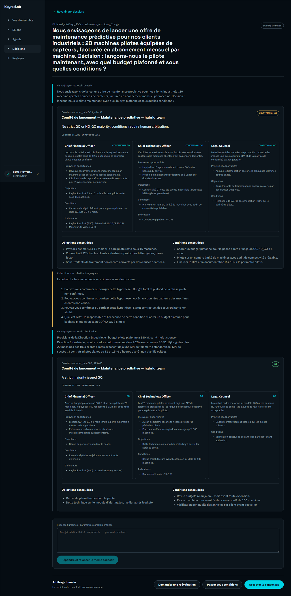

Lancer — ou pas
« Faut-il lancer ce projet maintenant, et à quelles conditions ? »
Vous hésitez sur un lancement. Dans la console, vous posez la question à votre comité. Chaque agent l'examine selon sa responsabilité : la rentabilité, la faisabilité, la conformité. Le collectif rend un verdict argumenté — GO, GO conditionnel ou NO-GO — avec les objections et les conditions à réunir. Vous arbitrez : accepter, conditionner, ou demander une nouvelle analyse.
- Un verdict argumenté, pas une opinion de plus
- Objections et conditions réunies en un seul dossier
- Le dernier mot reste à l'humain, trace à l'appui
